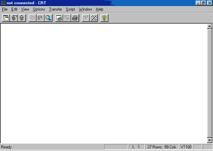
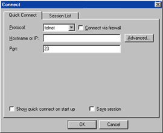

This tutorial will teach you the basics of using Telnet, which allows you to communicate with your web server in a different, and more effective, way than File Transfer Protocol (FTP). For this tutorial, we will be using the telnet client, CRT 2.3. If you do not already have this program, you may download the shareware version for free by clicking here.
You should now have CRT 2.3 downloaded and installed on your computer. OK, launch the CRT program, and you should see a screen which looks like this:

Let's start by connecting to your web server. To connect to your web server, click on the "Quick Connect" button which is the second from the left in the toolbar. This will bring up a dialog box which looks like this:

Enter your ip address, or your domain name in the box which says "Hostname or IP", and click on the OK button at the bottom of the dialog box. Wait a few seconds for a connection with your web server to be established. The screen should display a few words, and ask for your login. Type in the username you use for your web server, and hit enter. Next, it will ask for your password. Type in your password, and hit enter again. Don't worry, the screen isn't supposed to display anything when your typing your password in.
If you entered your username and password correctly, something should have appeared on your screen saying you have successfully logged in. Here's what my screen shows once I login:That's about all there is to logging into your web server with telnet.FreeBSD (vs21.virtualisys.com) (ttyp1) login: promotio Password: Last login: Fri Apr 23 15:12:49 from 212.211.10.118 Copyright (c) 1980, 1983, 1986, 1988, 1990, 1991, 1993, 1994 The Regents of the University of California. All rights reserved. FreeBSD 2.2.6-RELEASE (RKERNEL) #0: Sun Mar 28 20:01:03 PST 1999 Welcome to FreeBSD! If the doc distribution has been loaded on this machine, the FreeBSD Handbook will be in file:/usr/share/doc/handbook and the FAQ in file:/usr/share/doc/FAQ Type /stand/sysinstall to re-enter the installation and configuration utility. You have new mail. bash-2.01$